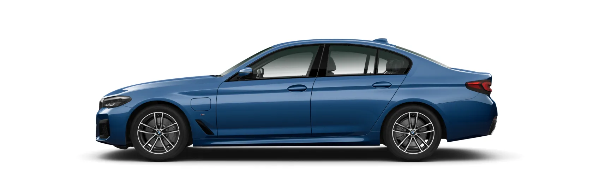
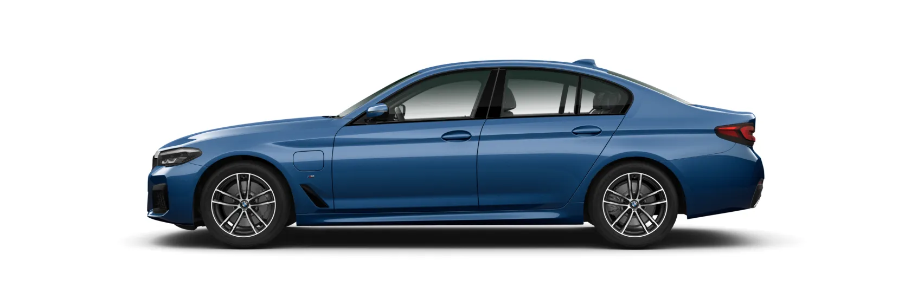

The BMW 5 Series Sedan is the epitome of a sporty business saloon. At very first sight it conveys an impression of stylish athleticism that particularly expresses itself in the dynamic silhouette and reduced design language. Clear surfaces and precise contours lend the elegant exterior a modern, technical atmosphere. The elegant and functional interior completes the innovative ambition of the vehicle with future-oriented technologies and sporty features. In combination with impressive driving dynamics and innovative technologies, the BMW 5 Series Sedan provides comfort, self-assuredness and, above all, a supreme level of sheer driving pleasures on journeys both short and long.
DESIGN YOUR BMW 5 SERIES SEDAN
M Sport package
 


The BMW 5 Series Sedan M Automobiles combine typical M sportiness with the comfort and elegance of a
business saloon in an outstanding manner. Explore four unique M Automobiles with strong personalities: an
outstanding output of 635 hp (467 kW) and an acceleration from 0 to 100 km/h in only 3.0 seconds make the
BMW M5 CS the most powerful BMW M5 Sedan there has ever been. Part of a limited production series, the
special model with unique M specific suspension and design components exclusively available for this model
guarantee a pure motorsport sensation. Boasting a maximum output of 625 hp (460 kW) and suspension set-up
optimised for performance, the BMW M5 Competition with M xDrive exceeds the highest expectations. The
high-performance sports saloon underlines this visually with numerous design features in black high-gloss.
In addition to the M xDrive designed for maximum traction and dynamics, the BMW M5 has a suspension that
meets every demand for sporty ride comfort over long distances. Interacting with the 600 hp (441 kW)
8-cylinder M engine, this creates driving dynamics distinguished by power and agility. Rounding off the
quartet is the BMW M550i xDrive Sedan. The athletic BMW 5 Series Sedan delivers 530 hp (390 kW) and
impresses with an especially balanced combination of sportiness, comfort and efficiency.
BMW M5 CS:
Fuel consumption in l/100 km (combined): 10.6
CO2 emissions in g/km (combined): 242
DESIGN YOUR BMW M5 SERIES CS
BMW M5 Competition